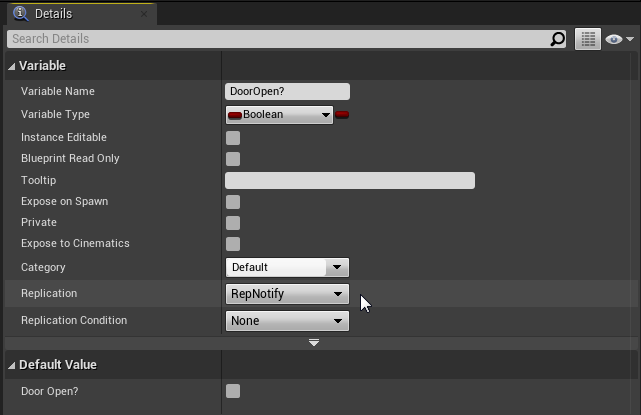
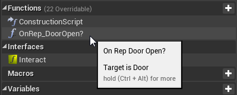
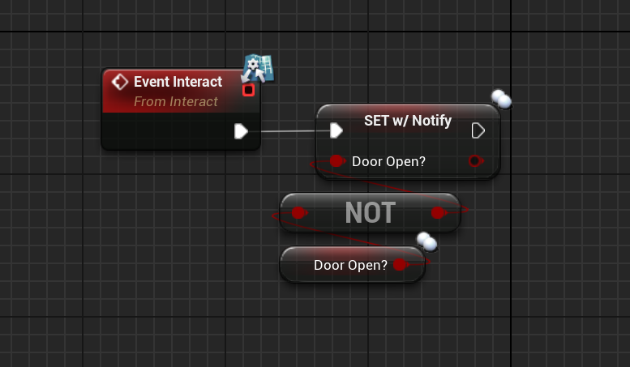
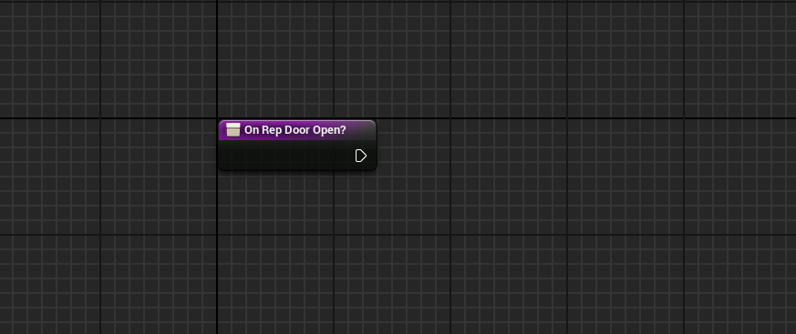
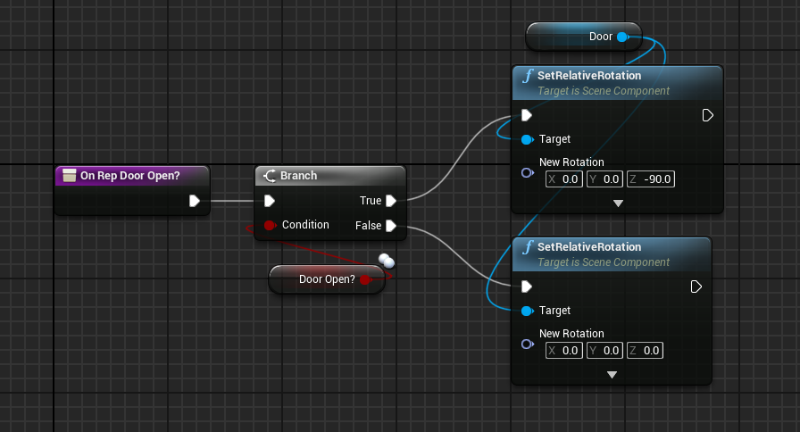

Replicating Variables with RepNotify
Alternatively to just setting a variable to be replicated, we can make the process a little bit easier and use RepNotify.
If you remember from the last page, when selecting the replication options of a variable we can choose for it to be either Replicated or RepNotify, as shown here:

The main difference between a regular replicated variable and RepNotify is that RepNotify will automatically create a function for you, that will automatically execute on each client when that variable is changed. Once again only the server has authority to change these variables.
For the purposes of this example I will edit the logic from the door we created before to use a RepNotify function instead of just being replicated. You may notice when setting a variable to RepNotify, Unreal will automatically create a new function for you which you can find in your functions list as shown here:

You can either access the function here or you can double click on the variable in your event graph to open it up. If you are following along, we can now delete all of the door code that existed in the multicast and only have the interact set the boolean as so:

After opening the function you will be presented with a page that looks like this:

This is where the code for our RepNotify will lie, and we can just add our code back here like this:

With this new logic, as soon as the boolean DoorOpen gets changed, once the clients receive the new change it will automatically run the RepNotify function with the new value of that variable.
This is extremely useful for preventing desync, which if you tested our code from the previous slide with the door, you may have noticed that sometimes the door could become desynced and opening on one client would result in the door closing for another.
Using RepNotify is not only extremely optimized but will prevent us from having any desyncs like with what was possible with our previous code.
This is also a good example to show that whichever type of replication condition we use is heavily dependent on what we are trying to do. There will be times that the client will need to have access to replicated variables at times that aren't when the variable is instantly changed.
For something like a door being opened, we only need the boolean value when the door is actively being interacted with, which is why RepNotify is actually a better choice in this scenario.
Now that we have got most of the basics of replicating in Unreal Engine, we can continue to the next page to learn how to test our code!